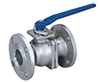
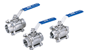
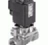
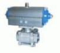
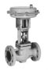
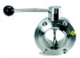
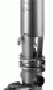
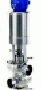

EA-207: Válvula esférica inoxidable 2 cuerpos paso total roscada

Válvula esférica 2 cuerpos, paso total, con bloqueo de palanca, extremos roscados BSPT, 1000 psi, cuerpo y bola en acero inoxidable CF8M, asiento de teflón reforzado 15% con fibra de vidrio RPTFE, vástago inexpulsable, diámetros de ¼ a 2”. Marca Emico
EA-303: Válvula esférica inoxidable 3 cuerpos paso total roscada.

Válvula esférica 3 cuerpos, paso total, con bloqueo de palanca, plantilla de montaje ISO-5211, extremos roscados BSPT, PN63 (1000 psi), cuerpo y bola en acero inoxidable CF8M, asiento de teflón reforzado 15% con fibra de vidrio RPFTE, vástago inexpulsable, dispositivo antiestática, diámetros de ¼ a 4”. Marca Emico
EA-25: Válvula esférica acero al carbono 2 cuerpos paso total bridada fire safe
Válvula esférica 2 cuerpos, paso total, con plantilla de montaje para actuador normalizada ISO 5211, con bloqueo de palanca, extremos bridados ANSI 150, certificado Fire safe, diseño ASME B16.34, ensayos API598 y API 6D, entrecaras ASME B16.10, dispositivo antiestática, cuerpo acero al carbono WCB, bola acero inoxidable CF8M, asiento de teflón reforzado 15% con fibra de vidrio RPTFE, vástago inexpulsable, diámetros de ½ a 12”. Marca Emico
EA-402: Válvula esférica inoxidable 2 cuerpos paso total bridada

Válvula esférica 2 cuerpos, paso total, con plantilla de montaje para actuador normalizada ISO 5211, con bloqueo de palanca, extremos bridados ANSI 150, diseño ASME B16.34, ensayos API598 y API 6D, entrecaras ASME B16.10, dispositivo antiestática, cuerpo y bola acero inoxidable CF8M, asiento de teflón reforzado 15% con fibra de vidrio RPTFE, vástago inexpulsable, diámetros de ½ a 12”. Marca Emico
EA-302: Válvula esférica acero al carbono 3 cuerpos paso total roscada
Válvula esférica 3 cuerpos, paso total, con bloqueo de palanca, extremos roscados BSPT, 1000 WOG, cuerpo acero al carbono WCB, bola acero inoxidable CF8M, asiento de teflón reforzado 15% con fibra de vidrio RPTFE, vástago inexpulsable, diámetros de ¼ y 2”. Marca Emico
R7: Válvula mariposa wafer hierro ductil

Válvula mariposa tipo wafer, para instalar entre bridas ANSI 150 DIN PN10 y PN16, cuerpo en hierro dúctil, disco en acero inoxidable CF8M, vástago en SS 420, asiento en EPDM, cuerpo PN16, con plantilla de montaje para actuador normalizada ISO 5211, a palanca de 2” a 10”, con reductor sin fin y corona de 12’ a 24”. Marca Emico
Electroválvula Tipo 407
Para vapor y medios a alta temperature, 2/2 vías Conexión: G 1/2 – G 2, Alta fiabilidad, Resistente a la erosion, Intervalo de presión: 0-10 bar, máx. Temp del medio 0°C … 180°C, Temp del ambiente 55°C Máx, Material del cuerpo: latón (asiento de la válvula Ac. Inox), Material de juntas PTFE, Material de bobina Resina Epoxi, Potencia Absorbida CC 28W (DN50), CA 100 a 120 VA (entrada), 35 VA (mant), Clase de Protección con Conector IP65, Suministro Estándar Conector DIN 43 650 A
Válvula de accionamiento neumático Tipo 3347-7

Válvula de control para aplicaciones higiénicas en las industrias alimenticia y farmacéutica. Paso nominal DN 15 a 125 · 1/2” a 5” Presión Máx 16 bar · 240 psi, Temp del medio -10 a 150°C · 14 a 300°F, Válvula de ángulo, Tipo 3347 con accionamiento neumático para el montaje integrado de un posicionador. Cuerpo de Válvula libre de espacios muertos de Ac. Inox, Materiales de juntas en contacto con el medio conforme FDA, Obturador de la válvula con cierre metálico o con junta blanda, Conexión Clamp entre el cuerpo y parte superior, fácil desacople, Apropiada para limpieza según el procedimiento CIP
Válvula de asiento inclinado Tipo 3353

Aplicación: Válvula todo/nada con accionamiento neumático de piston, Diámetro nominal DN 15 (1/2”) a 50 (2”), Presión nominal PN 40, Margen de Temp -10 a 180 °C, Válvula de paso recto con asiento inclinado y obturador plano con junta blanda: • accionamiento neumático de piston • cuerpo de acero inoxidable, Medios admisibles: • agua • aire • gases y líquidos neutros • aceites • vapor hasta 180°C • medios corrosivos • Bajo mantenimiento y mínimos costes debido a: • la junta blanda intercambiable • descarga segura de los resortes de mando sin tornillo tensor de resorte, Accionamiento neumático de pistón con superficie de 30 o 60 cm2 (diámetro del pistón de 63 o 90 mm), Otras ejecuciones: Accionamiento neumático con: final de carrera electric y adaptador-conector según NAMUR, p. ej. para el montaje de una electroválvula, Conexión por bridas sobre demanda
Válvula de Control Tipo V2001-IP

Con accionamiento electroneumático, Conexión: DN 15 hasta DN 50, Presión máxima: PN 16 hasta PN 40, Rango de Temp -10°C hasta 220°C, Cuerpo de la válvula de fundición gris o acero fundido, Posicionador i/p integrado, 4 a 20mA, aire de alimentación a Máx 6 bar
Válvula esférica con actuador neumático
Las válvulas controladas remotamente pueden manejar fluídos de alta viscosidad y un gran número de productos químicos corrosivos, al contrario de las válvulas solenoides comúnes, las cuales no. Actuador neumático de doble acción o de retorno por resorte: • Tipo Scotch Yoke • Sin contacto de metal a metal • Montaje : ISO 5211, DIN 3337 • Conección Namur para accesorios • Ángulo de rotación: 90° • Superficie anodizada e interior con doble recubrimiento • Cuerpo: Aleación de Aluminio • O-Rings: NBR, Condiciones de trabajo: • Medio de operación: Aire seco comprimido • Presión de operación: 4 ~ 7 Kg/cm² • Temp de operación: -10 ~ 60 °C, Rosca de la válvula: ½” a 2″
Válvula Globo de Control Tipo 241-7
Con actuador neumático, Conexión: ½’’ hasta 6’’, Presión Nominal: PN 10, PN 16, Rango de Temp -196°C hasta 450°C, Cuerpo de la válvula de Acero carbono, fundición, acero inoxidable, Construída por un sistema modular y puede equiparse con diversos aparatos periféricos, posicionadores, electroválvulas, finales de Carrera y otros accesorios
Válvula Mariposa LKB
Aplicación: LKB es una válvula sanitaria operada automática o manualmente para uso en sistemas de manejo de fluídos en Ac Inox. Datos técnicos: Presión Máx del producto: 10 bar, Presión mínima del producto: Vacío complete, Rango de Temp 15° F a 200° F, Actuador: Presión Máx de aire: 7 bar, Presión mínima de aire, NC y NO: 4 bar, Rango de Temp 15° F a 195 ° F
Válvula Neumática de Control Tipo 3244-7

3 Vías Conexión: 1/2” hasta 6”, Presión Nominal: PN 10 hasta PN 40, Rango de temperaturas: -196°C hasta 450°C, Cuerpo de la válvula de fundición gris, acero fundido o fundición de acero inoxidable, Parte superior de la válvula de una sola pieza, Construída por un sistema modular y puede equiparse con diversos aparatos periféricos: posicionadores, electroválvulas, finales de carrera y otros accesorios
Válvula Neumática de Control Tipo 3249-7

Para servicio aséptico, Para industrias alimenticias y farmacéuticas, Conexión 1/2” hasta 2”, Presión Máx 10 bar, Rango de temperaturas: -10°C hasta 130°C, Cuerpo de la válvula de acero inoxidable, Cuerpo diseñado sin cavidades
Válvulas SMP
SMP-SC El modelo SMP-S, de mínimo derrame, es la base de la familia mixproof de Alfa Laval. Su avanzado, aunque simple diseño incorpora características sanitarias y de resistencia a la presión que la hacen una parte indispensable de las más exigentes operaciones de proceso. SMP-BC La válvula mixproof SMP-BC está específicamente diseñada para aplicaciones donde seguridad adicional y detección de fugas es deseabe. Dado que la SMP-BC está basada en el probado diseño SRC de asiento de válvula, muchas partes son comúnes a ambas válvulas. Los sellos, fácilmente accesibles, pueden ser reemplazados desde la parte superior. SMP-BCA SMP-BCA es una válvula aséptica de doble asiento con diafragma PTFE. Es adecuada para concidiones de operación asépticas como altas temperaturas de esterilización . SMP-BCA está especialmente diseñada para aplicaciones asépticas con la mayor demanda higiénica.
Válvulas para Uso Sanitario 1
Las válvulas Mixproof son una parte esencial del procesamiento de flujos sanitarios, separando dos productos diferentes, pero también preveniendo la contaminación desde otros fluídos no sanitarios. Mixproof significa no-mezcla de líquidos incompatibles, pero cuando se piensa en términos de procesamiento, la tarea es obtener soluciones compatibles mientras al mismo tiempo se usan tan pocos recursos como sea posible. En efecto, una válvula de doble asiento puede hacer el trabajo de dos o tres válvulas de simple asiento, ahorrándole espacio y costos de instalación, y dándole una flexibilidad de sistema inigualable. Alfa Laval ofrece muchas vávulas mixproof, todas con mantenimiento simple y de bajo costo.
Válvulas para Uso Sanitario 2

Válvulas Asépticas de Diafragma Alfa Laval ofrece un extenso rango válvulas asépticas de diafragma para procesos ultra-higiénicos. La válvulas de diafragma es la más comunmente usada en la industria farmacéutica, pero también es una alternativa ideal para otras aplicaciones asépticas. Con su diseño modular, compuesto de cuerpo, diafragma y actuador, posibilita la realización de diseños especiales con componentes estándar de alta calidad y bien probados. Puede ser combinada en gran número de configuraciones pero la más típica es una válvula de dos vías con función de on/off. La Válvula Aséptica de Diafragma está disponible tanto con actuadores manuales y neumáticos.
Válvulas para Uso Sanitario 3

Las válvulas mariposa Alfa Laval son económicas, disponibles tanto para sistemas automáticos u operados manualmente. Gracias a sus amplias áreas de apertura, estas válvulas de acero inoxidable ofrecen baja resistencia al flujo, permiten dirección de flujo reversible y proveen trato amable de productos de baja y media viscosidad.